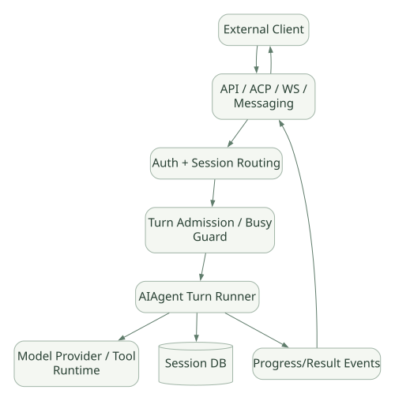

SECOND STUDY / Gateway와 예약 실행
Gateway와 예약 실행
이번 단원의 읽는 관점
세션 정본의 쓰기 소유권과 요청·Run·Stream의 수명을 읽습니다. Cron은 예약 시각에 새 Agent Session을 시작합니다.
살펴볼 경계스케줄 슬롯 Claim, 실행 성공, 결과 Delivery와 외부 효과 exactly-once를 구분하세요.
이 페이지의 세부 목차
15. Gateway·Serving: 요청이 끝날 때까지 서버는 무엇을 하나?#
15.1 '서버에서 Agent를 다 처리한 다음 응답 반환'이란?#
Agent가 API Server 안에서 실행되는 경우 일반적인 웹 API와 다르게 한 번의 요청 안에서 모델을 여러 번 호출하고 Tool을 실행할 수 있다. 그래서 즉시 응답하는 POST /chat 하나로 모든 흐름을 다루면 오래 걸리는 작업, 승인 대기, 중단, 클라이언트 재연결을 처리하기 어렵다.
Hermes는 Gateway를 장시간 살아 있는 Session Authority로 사용하고, 다양한 Adapter가 요청을 해당 세션으로 전달하는 구조를 제공한다. [DOC]
15.2 계층적 Serving 구성#
가로로 이동해서 읽을 수 있습니다. 도식 크게 보기 ↗

원문의 학습용 도식입니다. 연결 방향·분기 조건·점선·쌍방향 연결을 보존해 세로로 배치했습니다. 실제 구현·의사코드·해석의 구분은 본문을 함께 읽으세요.
도식 원문 보기 (Mermaid)
flowchart LR
C[External Client] --> API[API / ACP / WS / Messaging]
API --> AUTH[Auth + Session Routing]
AUTH --> Q[Turn Admission / Busy Guard]
Q --> A[AIAgent Turn Runner]
A --> M[Model Provider / Tool Runtime]
A --> DB[(Session DB)]
A --> EVENTS[Progress/Result Events]
EVENTS --> API
API --> C| 구성 | 책임 | 설계상 질문 |
|---|---|---|
| API Front Door | HTTP/WS/stdio 프로토콜 | 인증·Rate Limit·Connection Lifecycle |
| Session Authority | 세션 정본 관리 | 여러 Client가 동일 Session에 접근할 때 충돌 방지 |
| Turn Admission | 현재 실행 중인 요청 처리 | Queue/Interrupt/Reject 중 무엇인가? |
| Agent Runtime | 실제 LLM·Tool Loop | Iteration·Budget·Cancel |
| Progress Channel | 토큰/Tool 상태 전달 | SSE/WS Stream·Reconnect |
| Storage | 메시지·결과·기록 | 원자성·복구·감사 |
| Delivery | 사용자에게 결과 반송 | 단일 플랫폼/교차 플랫폼·재시도 |
15.3 Hermes의 세션 쓰기 소유권#
[DOC] v0.22 계열의 공식 Session Storage 문서는 프로필 Gateway가 정식 세션의 유일한 쓰기 주체이고, CLI/TUI/Desktop/API/ACP/Cron 등의 Client가 Gateway의 /api/ws를 통해 세션 요청을 인정받는 구조를 기술한다. 이 원칙은 SQLite DB를 여러 실행기가 직접 열어 쓰게 만들었을 때 발생할 수 있는 경쟁·불일치를 완화하기 위한 것이다.
단, SQLite WAL이 항상 1개의 DB Writer만을 허용한다는 일반론과 애플리케이션이 Gateway를 단일 논리적 Writer로 설계하는 것은 다르다. WAL은 DB Transaction과 Reader 동시성을 관리하지만, 같은 Session에 대한 애플리케이션 수준 Turn 순서·승인·Interrupt는 별도 정책이 필요하다.
문서: https://hermes-agent.nousresearch.com/docs/developer-guide/session-storage
15.4 인터페이스 별 차이#
[DOC] 공식 Programmatic Integration 문서는 Hermes Agent Core에 접근하는 여러 프로토콜을 구분한다.
| 표면 | 주요 전송 | 적합한 용도 |
|---|---|---|
| ACP | stdio JSON-RPC | IDE와 Agent 협업 |
| TUI Gateway | JSON-RPC stdio 또는 WS | 세션·승인·Stream 세밀 제어 |
| API Server | HTTP + SSE | 웹 클라이언트·다른 언어 연동 |
| Messaging Gateway | 플랫폼 Adapter | Telegram/Discord/Slack 등 채널별 대화 |
HTTP API에는 동기/Streaming Chat 형태 외에도 비동기적 Run 추적을 위한 POST /v1/runs, GET /v1/runs/{id}, GET /v1/runs/{id}/events, 승인/중단/Steer 기능이 문서화돼 있다. API 스펙은 릴리스별로 변경될 수 있으므로 실제 사용 시 태그와 문서의 일치를 별도 확인한다.
문서: https://hermes-agent.nousresearch.com/docs/developer-guide/programmatic-integration
15.5 동기 응답과 비동기 Run의 차이#
패턴 A: 동기 요청
POST /chat -> 서버가 모델/도구 Loop 수행 -> 최종 결과 반환
장점: 클라이언트 단순
약점: 긴 요청·프록시 Timeout·승인 대기·재연결 어려움
패턴 B: Stream
POST /chat (stream=true) -> 진행 Event -> 최종 Event
장점: 사용자가 진행상황 관찰
약점: 연결 유실 때 실행과 이벤트 복구를 따로 설계
패턴 C: 비동기 Run Resource
POST /runs -> run_id 반환
GET /runs/{id} -> 상태 조회
GET /runs/{id}/events -> 이어받을 Event Stream
POST /runs/{id}/stop -> 취소 요청
장점: 요청과 실행 수명주기를 분리
약점: Run Store / Event Store / 소유권·GC 관리 복잡이 세 방식은 'Codex 같은 Agent 서비스'를 구현할 때 고려할 기본 패턴이다. 컨테이너/VM별 Worker 할당, 장기 작업 분산 실행, 세션 복구 등은 API Endpoint만 구현한다고 완성되지 않는다.
15.6 Busy Session과 사용자 개입#
[DOC] Gateway는 Agent가 현재 실행 중인 세션에 새 메시지가 들어오면 적절하게 Queue하거나 Interrupt 신호를 보내고, /approve, /deny, /stop 같은 제어 메시지는 우회 통로에서 처리할 수 있다. Gateway의 Adapter Guard와 Runner Guard가 별도로 존재한다.
코드 안내:
https://github.com/NousResearch/hermes-agent/blob/v0.22.5/gateway/run_inbound.py
https://github.com/NousResearch/hermes-agent/blob/v0.22.5/gateway/platforms/base.py
https://github.com/NousResearch/hermes-agent/blob/v0.22.5/gateway/session.py
실행 흐름 설계 질문:
- 사용자 새 메시지는 기존 Turn을 취소하는가, 대기열에 넣는가, 다음 Tool Boundary에서 반영하는가?
- 승인 대기 중 Stream이 끊겨도 승인 요청을 복구할 수 있는가?
- 사용자에게 '완료'를 보냈으나 DB 기록 실패 시 무엇을 정본으로 볼 것인가?
- Gateway가 재시작되었을 때 외부 Tool 부작용이 완료됐는지 알 수 있는가?
- 여러 Client가 같은 Session을 열어도 순서와 인증을 보존하는가?
15.7 Hermes Server와 vLLM/SGLang Server는 다르다#
Hermes API Server : 사용자 요청 → Agent 판단/Tool 실행/세션 저장
vLLM/SGLang : 모델 Prompt → Token 생성에 최적화된 Inference ServerHermes가 로컬 모델 Provider를 사용하더라도 Hermes 자체가 곧 Inference Engine이 되는 것은 아니다. 이 경계는 추후 프레임워크 비교에서 특히 중요하다.